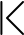
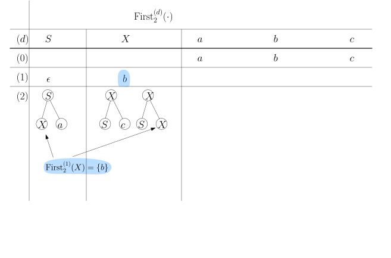
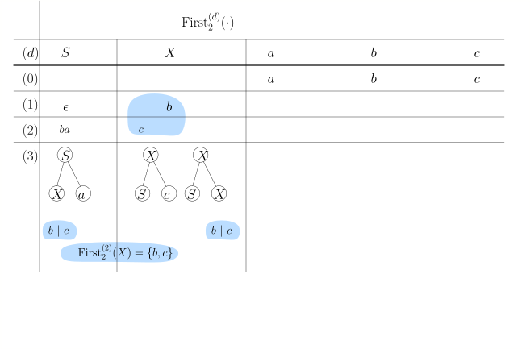
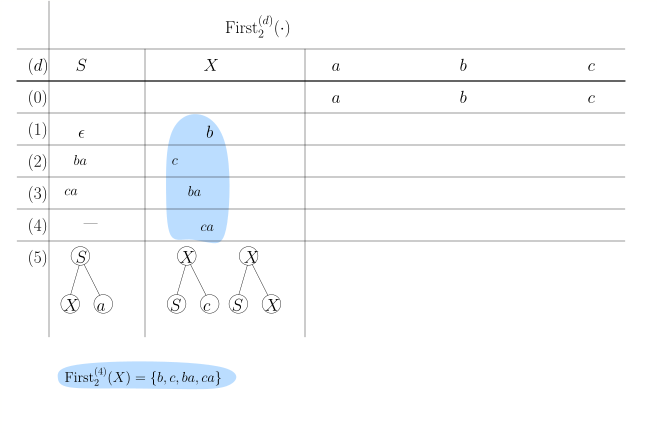

<div id="rightSideWrapper">

        <div class="content">
            <div class='chapter'>
                <div class='subChapter'>
                    <h1 class='hidden-title'>
                        <span class='subChapterTitle'>5.4 LL(\(k\))-Grammatiken</span>
                    </h1>

                    <div class='well container theorem'>
                        <span class='numbered-title'>Definition</span><strong>Grenzform</strong>
                        Sei \(G = (\Sigma, N, S, P)\) eine kontextfreie Grammatik.
                        Eine Wortform \(A \alpha\) - also eine Wortform, die mit einem Nichtterminal beginnt -
                        heißt <em>Grenzform</em>, wenn es ein \(w \in \Sigma^*\) gibt, so dass
                        es eine Linksableitung
                        \begin{align*}
                        S \Step{}^* w A \alpha
                        \end{align*}
                        gibt.
                        In anderen Worten: eine Grenzform ist das, was bei einem Kellerautomaten auf dem Stack liegt,
                        wenn ein Nichtterminal ganz oben liegt.
                    </div class='well container theorem'>

                    Grenzformen sind also diejenigen Wortformen, bei denen der Kellerautomat eine Entscheidung
                    treffen muss, weil er eventuell mehrere Produktionen \(A \rightarrow \beta\) zur Auswahl hat.
                    In diesem Teilkapitel wollen wir herausarbeiten, unter welchen Umständen wir die
                    richtige Auswahl treffen können, auch wenn wir nur wenige weitere Zeichen unseres Inputwortes lesen
                    dürfen.


                    <div class='well container theorem'>
                        <span class='numbered-title'>Definition</span>
                        Für ein Wort \(w \in \Sigma^*\) und eine natürliche Zahl \(k \in \N\)
                        sei \(\first_k(w)\) wie folgt definiert:
                        \begin{align*}
                        \first_k(w) := \begin{cases}
                        w & \textnormal{ wenn $|w| \lt k$} \\
                        u & \textnormal{ wenn $w = uv$ und $|u| = k$}
                        \end{cases}
                        \end{align*}
                        In Worten: \(\first_{k}(w)\) besteht aus den ersten \(k\) Zeichen
                        von \(w\) (oder aus ganz \(w\), falls es weniger als \(k\) lang ist).
                    </div class='well container theorem'>

                    <div class='well container theorem'>
                        <span class='numbered-title'>Definition</span>
                        <strong>LL(\(k\))-Grammatiken</strong>
                        Eine kontextfreie Grammatik \(G = (\Sigma, N, S, P)\) ist eine
                        LL(\(k\))-Grammatik, wenn für jede Grenzform \(A \alpha\) und für jedes Paar
                        \begin{align*}
                        A & \step{1} \beta \\
                        A & \step{2} \gamma
                        \end{align*}
                        verschiedener Produktionen (also \(\beta \ne \gamma\)) folgendes gilt: wenn
                        \begin{align*}
                        A\alpha & \Step{1} \beta \alpha \Step{}^* x \\
                        A\alpha & \Step{2} \gamma \alpha \Step{}^* y \\
                        \end{align*}
                        dann müssen sich \(x\) und \(y\) in den ersten \(k\) Zeichen unterscheiden, also
                        \begin{align*}
                        \first_k(x) \ne \first_k(y) \ .
                        \end{align*}
                    </div class='well container theorem'>


                    Intuitiv gesprochen: wenn wir bereits eine ersten Teil \(w\) unseres Zielwortes
                    abgeleitet haben, dann können wir die nächste anzuwendende Produktion
                    eindeutig bestimmen, indem wir die nächsten \(k\) Zeichen des Zielwortes lesen.

                    <div class='well well-lg numbered-exercise container'>
                        <span class='numbered-title'>Übungsaufgabe</span>
                        Negieren Sie die Definition, d.h., schreiben Sie eine Aussage der Form
                        <em>Wenn \(G\) nicht LL(\(k\)) ist, dann gibt es...</em>
                    </div>


                    <div class='well container theorem'>
                        <span class='numbered-title'>Beispiel</span>
                        Die Klammern-Grammatik
                        \begin{align*}
                        S & \step{1} \epsilon \\
                        S & \step{2} (S)S
                        \end{align*}
                        ist LL(1).
                        <div class='well subtheorem'>
                            <strong>Beweis.</strong>
                            Folgen wir der Definition von LL(1): für jedes Paar verschiedener Regeln muss etwas
                            gelten. Wir haben hier keine Auswahl, denn es gibt ja nur ein Paar. Also
                            müssen wir zeigen, dass, falls
                            \begin{align*}
                            S \Step{}^* wS\alpha & \Step{1} w \alpha \Step{}^* w x \\
                            S \Step{}^* wS\alpha & \Step{2} w \texttt{(}S\texttt{)}S \alpha \Step{}^* w y \\
                            \end{align*}
                            gilt, dann auch \(\first_1(x) \ne \first_2(y)\) gilt.
                            Offensichtlich ist \(\first_2(y) = \) "\(\texttt{(}\)".
                            Was kann \(\first_k(x)\) sein?

                            <p><strong>Behauptung.</strong> Wenn \(S \rightarrow \delta \in (\Sigma \cup N)^*\),
                                dann steht jedes \(S\) in \(\delta\) entweder am Ende von \(\delta\) oder
                                unmittelbar vor einem "\(\texttt{)}\)".</p>

                            <p>Das folgt per Induktion über die Länge der Ableitung. Wenn es also für \(\delta\) gilt
                                und wir die Produktion \(S \rightarrow (S)S\) auf \(\delta\) anwenden,
                                dann gilt es für jedes "alte" \(S\) und auch für die beiden neu erzeugten;
                                wenn wir \(S \rightarrow \epsilon\) anwenden, dann verschwindet ein \(S\),
                                die Behauptung gilt aber nach wie vor für alle anderen \(S\) in \(\delta\).


                                <span class='qed'>\(\square\)</span>
                            </p>
                            <p>
                                Wir folgern also, dass für das \(\alpha\) den beiden obigne
                                Herleitungen \(\first_k(\alpha) \in \{\epsilon, \texttt{)}\}\) gilt.
                                Keines davon ist ein Nichtterminal, und so muss auch
                                \(\first_k(\alpha) = \first_k(x)\) gelten. Zusammenfassend gesagt:
                                \begin{align*}
                                \first_k(x) & \in \{\epsilon, \texttt{)}\} \\
                                \first_y(y) & = \texttt{(} \ ,
                                \end{align*}
                                und somit sind sie verschieden.
                                Wir folgern, dass \(G\) eine LL(1)-Grammatik ist.
                            </p>
                        </div class='proof'>
                    </div class='well container theorem'>

                    Sehen Sie, dass die LL(\(k\))-Bedingung der Aussage "der Backtrack-Baum hat keine langen Sackgassen"
                    ähnelt (aber nicht völlig äquivalent dazu ist). Wenn \(G\) eine LL(\(k\))-Grammatik ist
                    und wir den Backtrack-Baum für ein Wort bauen, dann gilt: sobald wir in einer Sackgasse \(k\)
                    neue Terminalsymbole
                    am "Terminalpräfix" der Wortform hergeleitet haben, merken wir, dass wir in einer Sackgasse sind.
                    Mit Terminalpräfix meine ich den längsten Präfix einer Wortform, der ausschließlich aus Terminalen
                    besteht.
                    Allerdings muss nicht jeder Ableitungsschritt den Terminalpräfix wachsen lassen
                    (Regeln wie \(X \rightarrow YbZ\) zum Beispiel ersetzen einfach das erste Nichtterminal),
                    aber "moralisch" geschieht etwas ähnliches).

                    <p>Wenn umgekehrt eine Grammatik <em>nicht</em> LL(\(k\)) ist, dann muss der Backtrack-Baum
                        beiden Ableitungen
                        \begin{align*}
                        w A \alpha & \Rightarrow w \beta \alpha \\
                        w A \alpha & \Rightarrow w \gamma \alpha \\
                        \end{align*}
                        mindestens so lange weiterverfolgen, bis der
                        Terminalpräfix \(k\) weitere Zeichen dazugewonnen hat. Der Baum bekommt also dementsprechend
                        lange Sackgassen.
                    </p>

                    <div class='well well-lg numbered-exercise container'>
                        <span class='numbered-title'>Übungsaufgabe</span>

                        (Beispiel 5.3 aus <em>The Theory of Parsing, Translation, and Compiling</em> von Alfred V. Aho
                        und Jeffrey D. Ullman).
                        Betrachten wir die Grammatik
                        \begin{align*}
                        S & \step{1} \epsilon \\
                        S & \step{2} ab A \\
                        A & \step{3} Saa \\
                        A & \step{4} b
                        \end{align*}
                        Zeigen Sie, dass diese Grammatik LL(2) ist, aber nicht LL(1).
                        <p>
                            <strong>Tip.</strong> Leiten Sie erst einmal
                            ein Dutzend verschiedene Wörter ab und finden dann
                            eine "normalsprachliche" Beschreibung
                            dieser Sprache. Beschreiben Sie dann alle möglichen Wortformen
                            \(\alpha\) mit \(S \Step{}^* \alpha\).
                        </p>

                        <!--
                        Wir werden zeigen, dass diese Grammatik LL(2) ist, aber nicht LL(1). Zu Hilfe kommt uns, dass 
                        wir die Sprache sehr leicht beschrieben können. Als erstes beobachten wir, dass keine Regel 
                        zwei Nichtterminale erzeugt; die Wortformen in einer Ableitung haben also zu jedem Zeitpunkt 
                        <em>genau ein</em> Nichtterminal oder <em>gar keines</em>, in welchem Falle die Ableitung zu Ende ist. 
                        Wenn wir noch genauer hinschauen, sehen wir, dass jede Wortform, die ein Nichtterminal enthält, 
                        eine der beiden folgenden Formen hat:
                        \begin{align*}
                        & (ab)^m S (aa)^m \\
                        & (ab)^{m+1} A (aa)^m 
                        \end{align*}
                        für \(m \geq 0\). Betrachten wir nun ein paar 
                        von Produktionen mit \(S\) auf der linken Seite:
                        \begin{align*}
                        S & \Step{}^* (ab)^m S (aa)^m \Step{1} (ab)^m \underbrace{(aa)^m}_{x}\\
                        S & \Step{}^* (ab)^m S (aa)^m \Step{2} (ab)^m ab A (aa)^m \Step{}^* (ab)^m  \underbrace{ab u (aa)^m}_{y}
                        \end{align*}
                        Es gilt also \(\first_2(x) = aa\) und \(\first_2(y) = ab\). Das zeigt bereits,
                        dass die Grammatik nicht in LL(1) ist. Die LL(2)-Bedingung ist zumindet für die linke Seite \(S\) erfüllt. 
                        Betrachten wir nun ein Paar von Produktionen mit \(A\) auf der linken Seite:
                        \begin{align*}
                        S & \Step{}^* (ab)^{m+1} A (aa)^m \Step{3} (ab)^{m+1} S (aa)^{m+1} \Step{}^* (ab)^{m+1} \underbrace{u (aa)^{m+1}}_{x}
                        \tag{für ein $S \Step{}^* u$} \\
                        S & \Step{}^* (ab)^{m+1} A (aa)^m \Step{4} (ab)^{m+1} \underbrace{b (aa)^m }_{y}
                        \end{align*}
                        Auch wenn wir \(u\) nicht kennen, so sehen wir doch, dass \(u\) entweder leer ist oder mit einem \(a\) beginnt.
                        In jedem Fall ist also \(\first_1(x) = \first_{1} u (aa)^{m+1} = a\) und 
                        \(\first_1(y) = b\). Somit gilt für die Produktionen mit \(A\) auf der linken Seite sogar die 
                        LL(1)-Bedingung und damit auf jeden Fall auch die LL(2)-Bedingung.
                        -->
                    </div class='well container theorem'>

                    <div class='well well-lg numbered-exercise container'>
                        <span class='numbered-title'>Übungsaufgabe</span>
                        Schreiben Sie eine äquivalente Grammatik zu der vorherigen Sprache, die LL(1) ist.
                        (Warnung: Ich weiß nicht, ob das überhaupt geht).
                    </div>

                    <div class='well well-lg numbered-exercise container' id="grammar-aaaaabb">
                        <span class='numbered-title'>Übungsaufgabe</span>
                        Betrachten wir die Grammatik \(G\):
                        \begin{align*}
                        S & \step{1} a S b \\
                        S & \step{2} a S \\
                        S & \step{3} \epsilon
                        \end{align*}
                        Sie erzeugt die Sprache
                        \begin{align*}
                        L(G) := \{ a^{m+k} b^m \ | \ m, k \in \N \} \ ,
                        \end{align*}
                        also Wörter, wo auf beliebig viele \(a\)'s eine Folge von
                        <em>höchstens</em> so vielen \(b\)'s folgt.

                        <p>
                            Geben Sie diese Grammatik in den
                            <a href="../../demos/drawManualGrammar.html">Parser-Simulator</a>
                            ein und finden Wörter mit langen Sackgassen.
                        </p>


                        <p>Zeigen Sie, dass diese Grammatik nicht LL\((k)\) ist, für kein
                            \(k \in \N\).
                        </p>

                        <!-- 

                        <p><strong>Die Grammatik \(G\) ist nicht LL(\(k\)).</strong></p>

                        <p><strong>Beweis.</strong></p> Betrachten wir das folgende Paar von Ableitungen:
                        von Ableitungen
                        \begin{align*}
                        S & \Step{1}^* a^m S b^m \Step{1} a^m \underbrace{aSb}_{\beta} b^{m} \Step{1}^{*} a^m a a^k S
                        b^k b b^{m}
                        \Step{3} a^m \underbrace{aa^k b^k b b^m}_{x} \\
                        S & \Step{1}^* a^m S b^m \Step{2} a^m \underbrace{aS}_{\gamma} b^{m} \Step{1}^{*} a^m a a^k S
                        b^k b^{m}
                        \Step{3} a^m \underbrace{aa^k b^k b^m}_{y} \\
                        \end{align*}
                        Wir haben verschiedene Regeln angewandt und nach \(a^m\) zwei verschiedene Suffixe \(x\) und
                        \(y\)
                        hergeleitet, allerdings gilt \(\first_k(x) = \first_k(y),\) und \(G\) ist somit nicht LL(\(k\)).
                        -->
                    </div class='well container theorem'>

                    <div class='well well-lg numbered-exercise container'>
                        <span class='numbered-title'>Übungsaufgabe</span>
                        Sei \(t \in \N\) eine feste, im Voraus bekannte Zahl.
                        Betrachten wir die Sprache
                        \begin{align*}
                        L_t := \{a^{m + l} b^m \ | \ m \geq 0, l \leq t\} \ ,
                        \end{align*}
                        also die Wörter der Form \(a^m b^n\) mit
                        \(n \leq m \leq n+t\).

                        <p>
                            Schreiben Sie für \(L_3\) eine Grammatik,
                            geben Sie diese im
                            <a href="../../demos/drawManualGrammar.html">Parser-Simulator</a> ein
                            und schauen, wie lang die Sackgassen werden können.
                        </p>
                        <p>
                            Zeigen Sie, dass \(L_3\) eine LL\((k)\)-Grammatik ist. Für welchen
                            Wert von \(k\)? Ist
                            \(L_t\) (für im Voraus bekanntes \(t\)) eine
                            LL\((k)\)-Grammatik? Für welchen Wert von \(k\)?
                        </p>
                    </div>


                    <h2>LL\((k)\)-Grammatiken parsen</h2>

                    Wir wollen nun erarbeiten, wie wir für eine LL\((k)\)-Grammatik
                    einen Parser, also im Prinzip einen deterministischen Pushdown-Automaten
                    schreiben können.
                    Wir tasten uns langsam voran. Wir beginnen mit einer
                    Verallgemeinerung von \(\first_k\) von Wörtern auf
                    <em>Wortformen</em> (die also Nichtterminale beinhalten können).
                    <div class='well container theorem'>
                        <span class='numbered-title'>Definition</span>
                        Sei eine kontextfreie Grammatik \(G = (\Sigma, N, S, P)\) und eine
                        Wortform \(\alpha \in (\Sigma \cup N)^*\) gegeben.
                        Wir definieren
                        \begin{align*}
                        \First_k(\alpha) := \{ \first_k(w) \ | \ w \in \Sigma^*, \alpha \Step{}^* w\}
                        \end{align*}
                    </div class='well container theorem'>
                    Wir können nun die LL\((k)\)-Bedingung äquivalent formulieren:
                    <div class='well container theorem'>
                        <span class='numbered-title'>Definition/Beobachtung</span>
                        Eine Grammatik \(G\) ist LL\((k)\) genau dann, wenn
                        für alle Grenzformen \(A \alpha\) und alle
                        Produktionen mit \(A\) auf der linken Seite, also
                        \begin{align*}
                        A & \rightarrow \beta_1 \\
                        A & \rightarrow \beta_2 \\
                        & \vdots\\
                        A & \rightarrow \beta_l
                        \end{align*}
                        die Mengen \(\First(\beta_i \alpha)\) paarweise disjunkt sind (wenn also keine
                        zwei dieser Mengen ein gemeinsames Element enthalten).
                    </div class='well container theorem'>

                    <p>
                        Nehmen wir eine Momentaufnahme unseres Kellerautomaten. Er
                        hat den Präfix \(x\) des Eingabewortes \(xy\) gelesen und
                        eine Linksableitung
                        \begin{align*}
                        S \Rightarrow^*{} x \alpha
                        \end{align*}
                        durchgeführt. Die Wortform \(\alpha\) ist genau das, was im Moment
                        auf dem Stack des Automaten liegt (um ganz genau zu sein: \(\alpha\texttt{\$}\)
                        liegt auf dem Stack). Wenn \(\alpha\) mit einem Terminalsymbol
                        \(c\) beginnt, so ist klar, was wir machen müssen: wir schauen, ob \(y\) mit
                        \(c\) beginnt. Wenn ja, lesen wir \(c\) und poppen es vom Stack. Der
                        schwierige Fall ist, wenn \(\alpha\) mit einem Nichtterminal beginnt.
                    </p>
                    <p>
                        Nochmal von vorn: im schwierigen Fall liegt auf dem Stack (oberhalb vom \(\$\))
                        eine Wortform, die mit einem Nichtterminal beginnt, also
                        \(A \alpha\). Das bedeutet, dass der Automat per Linksableitung
                        bis jetzt
                        \begin{align*}
                        S \Step{}^* x A \alpha
                        \end{align*}
                        hergeleitet hat. Der Automat muss sich nun zwischen allen Regeln für \(A\) entscheiden:
                        \begin{align*}
                        A & \rightarrow \beta_1 \\
                        A & \rightarrow \beta_2 \\
                        & \vdots\\
                        A & \rightarrow \beta_l \ .
                        \end{align*}
                        Der Automat betrachtet nun die nächsten \(k\) Eingabesymbole, also
                        \(\first_k(y)\) (wir gehen
                        mal davon aus, dass er das kann; programmieren könnten wir das auf jeden Fall;
                        ob man es im strengen Framework des Kellerautomaten hinkriegt, werden wir später sehen).
                        Wenn \(G\) eine LL\((k)\)-Grammatik ist, dann gibt es höchstens eine
                        Regel \(A \rightarrow \beta_i\) mit
                        \begin{align*}
                        \first_k(y) \in \first_k(\beta_i \alpha)
                        \end{align*}
                        da ja nach obiger Beobachtung diese Mengen disjunkt sind. Wenn
                        \(\first_k(y)\) in <em>keiner</em> dieser Mengen enthalten ist, so
                        kann die Ableitung offensichtlich nicht vervollständigt werden, und wir schließen,
                        dass \(xy \not \in L(G)\) ist.
                        Wenn es <em>genau ein</em> \(\beta_i\) gibt mit
                        \(\first_k(y) \in \first_k(\beta_i \alpha)\), dann ist
                        \(A \rightarrow \beta_i\) die "richtige" Produktion.
                        Wir wenden sie an, ersetzen also \(A\) auf dem Stack durch \(\beta_i\).
                        Falls es zwei oder mehr Produktionen \(A \rightarrow \beta_i\) gibt mit
                        \(\first_k(y) \in \first_k(\beta_i \alpha)\), dann ist die Grammatik
                        nicht LL\((k)\); wir beenden den Parsing-Prozess mit einer
                        Laufzeitfehlermeldung.
                        Hier ist ein Entwurf eines allgemeinen Algorithmus
                        für LL\((k)\)-Grammatiken:
                    </p>
                    <div class='well container'>
                        <p><strong>Generischer Algorithmus zum Parsen von LL\((k)\)-Gramatiken</strong></p>
                        <ol class="nested">
                            <li>Lege \(S\texttt{\$}\) auf den Stack.</li>
                            <li><tt>while</tt> Stack nicht leer</li>
                            <ol class="nested">
                                <li>
                                    Sei \(y\) das Resteingabewort.
                                </li>
                                <li>Wenn das oberste Symbol auf dem Stack ein Terminalsymbol \(c\) ist:
                                    <ul>
                                        <li>Lies das nächste Eingabesymbol \(c'\).</li>
                                        <li>Wenn \(c = c'\), poppe \(c\) vom Stack;</li>
                                        <li>ansonsten <tt>Reject</tt>.</li>
                                    </ul>
                                </li>
                                <li>Wenn das oberste Symbol auf dem Stack ein Nichtterminalsymbol
                                    \(A\) ist:

                                    <ol class="nested">
                                        <li>Schreibe den Stack als \(A \alpha\)</li>
                                        <li>Seien \(A \rightarrow \beta_1, \dots, A \rightarrow \beta_l\)
                                            alle Produktionen mit \(A\) auf der linken Seite.
                                        </li>
                                        <li>
                                            <span style="color:red; font-weight: bold;">
                                                Berechne \(\First_k(\beta_i\alpha)\) für alle \(\beta_i\) und
                                                schaue, welches \(\first_k(y)\) enthält</span>
                                            <ul>
                                                <li>Wenn es genau eine solche Produktion
                                                    \(A \rightarrow \beta_i\) gibt: wende Sie an; es ist die richtige
                                                    Produktion.
                                                </li>
                                                <li>Wenn es keine gibt: <tt>Reject</tt>. Das Wort kann nicht
                                                    abgeleitet werden.
                                                </li>
                                                <li>Wenn es mehrere gibt: ende mit einem Laufzeitfehler;
                                                    die Grammatik ist nicht LL\((k)\).
                                                </li>
                                            </ul>
                                        </li>
                                    </ol>
                                </li>
                                <li>Wenn das oberste Symbol \(\texttt{\$}\) ist:
                                    wenn Eingabewort zu Ende <tt>Accept</tt> ansonsten <tt>Reject</tt></li>
                            </ol>
                        </ol>
                    </div class='well container'>
                    <p>Die rot und fett gedruckte Zeile ist das "Herz" dieses Algorithmus. Um den Algorithmus
                        implementieren zu können, müssen wir es schaffen,
                        die Menge \(\First_k(\beta_i\alpha)\) zu berechnen.
                    </p>

                    <h2>
                        \(\First_k(A)\) und \(\First_k(\alpha)\) berechnen.
                    </h2>

                    <div class='well container theorem'>
                        <span class='numbered-title'>Definition</span>
                        Seien \(K, L \subseteq \Sigma^*\) zwei Mengen.
                        Mit \(K \circ L\) bezeichnen wir die Menge
                        \begin{align*}
                        K \circ L := \{xy \ | \ x \in K, y \in L\} \ .
                        \end{align*}
                        (Diese Definition haben Sie schon im Kapitel über reguläre Sprachen kennengelernt).
                        Für eine natürliche Zahl \(k\) definieren wir
                        \begin{align*}
                        \First_k(L) := \{\first_k(x) \ | \ x \in L\} \ .
                        \end{align*}
                        Weiterhin bezeichnen wir mit
                        \(K \circ_k L\) die Menge
                        \begin{align*}
                        K \circ_k L & := \First(K \circ L) \\
                        & = \{\first_k(xy) \ | \ x \in K, y \in L\} \ .
                        \end{align*}
                    </div class='well container theorem'>
                    <p>
                        Im Allgemeinen gilt
                        \(\First_k(S_1 \circ \dots \circ S_l) = S_1 \circ_k S_2 \circ_k \dots \circ_k S_l\).
                        In Worten: der \(\circ_k\)-Operator bildet alle möglichen Kombinationen von Wörtern und nimmt
                        von jedem die ersten \(k\) Zeichen.
                    </p>
                    <div class='well container theorem'>
                        <span class='numbered-title'>Beispiel</span>
                        Sei
                        \begin{align*}
                        K & := \{\epsilon, a, ab, aba\} \\
                        L & := \{c, bb, b\}
                        \end{align*}
                        Dann ist
                        \begin{align*}
                        K \circ L = \{c, bb, b, ac, abb, ab, abc, abbb, abb, abac, ababb, abab\}
                        \end{align*}
                        und somit
                        \begin{align*}
                        K \circ_2 L & = \{c, bb, b, ac, ab, ab, ab, ab, ab, ab, ab, ab\} \\
                        & =\{c, bb, b, ac, ab\}
                        \end{align*}
                    </div class='well container theorem'>

                    <div class='well container theorem'>
                        <span class='numbered-title'>Beobachtung</span>
                        <strong>- Wie man \(\First_k(\alpha)\) berechnet.</strong>
                        Sei eine Wortform \(\alpha\) gegeben, also
                        \(\alpha \in (\Sigma \cup N)^*\). Wir berechnen
                        \(\First_k(\alpha)\), indem wir als erstes
                        \(\alpha\) aussschreiben als
                        \begin{align*}
                        \alpha = (\sigma_1 \sigma_2 \sigma_3 \dots \sigma_n)
                        \end{align*}
                        wobei jedes \(\sigma_i\) ein Terminalsymbol oder ein Nichtterminalsymbol ist,
                        und berechnen dann \(\First_k(\alpha)\) wie folgt:
                        \begin{align}
                        \First_k(\alpha) = \First_k(\sigma_1) \circ_k \First_k(\sigma_2) \circ_k \dots \circ_k \First_k
                        (\sigma_n) \ .
                        \label{first-k-wortform}
                        \end{align}
                        <p>
                            Wir können dies schön der Reihe nach tun:
                        </p>
                        <ol class="nested">
                            <li>Initialisiere \(K := \{\epsilon\}\)</li>
                            <li><tt>for</tt> \(i=n\) <tt>down to</tt> 1 <tt>do:</tt>
                                <ul class="nested">
                                    <li>
                                        \(K := \First_k(\sigma_i) \circ_k K \)
                                        <span class='comment'>// \(K\) ist jetzt
                                            \(\First_k(\sigma_i) \circ_k \dots \circ_k \First_k(\sigma_n)\)
                                        </span>
                                    </li>
                                </ul>
                            </li>
                            <li><tt>return</tt> \(K\)</li>
                        </ol>
                        <p>
                            Wir müssen nur noch herausfinden, wie wir
                            \(\First_k(\sigma)\) für einzelne Zeichen \(\sigma\) berechnen.
                        </p>
                    </div class='well container theorem'>

                    Für ein Terminalsymbol \(c\) ist es trivial, \(\First_k(c)\) zu berechnen:
                    es ist \(\{c\}\), da sich aus \(c\) natürlich nur das Wort \(c\) ableiten lässt.
                    Für Nichtterminale müssen wir uns anstrengen. Die erste Idee ist, dass
                    wir für \(\First_k(X)\) eine Gleichung schreiben können, die \((\ref{first-k-wortform})\) verwendet.

                    <div class='well container theorem'>
                        <span class='numbered-title'>Beobachtung</span>
                        Sei \(X\) ein Nichtterminal und
                        \begin{align*}
                        X & \rightarrow \alpha_1 \\
                        X & \rightarrow \alpha_2 \\
                        & \vdots \\
                        X & \rightarrow \alpha_k
                        \end{align*}
                        die Produktionen der Grammatik mit \(X\) auf der linken Seite. Dann gilt
                        \begin{align}
                        \First_k(X) = \bigcup_{i=1}^k \First_k(\alpha_i)
                        \label{first-k-nonterminal}
                        \end{align}
                        Was ja eigentlich offensichtlich ist: wenn sich ein Wort \(X \Step{}^* w\) aus \(X\) ableiten
                        lässt, dann
                        muss dies mittels einer der obigen Produktionen geschehen: \(X \Step{} \alpha_i \Step{}^* w\),
                        und somit
                        gilt \(\first_k(w)\in \First_k(\alpha_i)\).
                    </div class='well container theorem'>

                    <p>
                        Die Gleichungen \((\ref{first-k-wortform})\) und \((\ref{first-k-nonterminal})\) leuchten zwar
                        ein, scheinen aber erstmal
                        nicht hilfreich, diese Mengen auch tatsächlich zu berechnen. Denn eventuell taucht \(X\) selbst
                        wieder auf einer rechten
                        Seite auf, sagen wir \(\alpha_1\). Um \(\First_k(X)\) zu berechnen, müssen wir also laut
                        \((\ref{first-k-nonterminal})\) die
                        Menge \(\First_k(\alpha_1)\) kennen; um diese zu berechnen, brauchen wir laut
                        \((\ref{first-k-wortform})\) allerdings zuerst
                        unter Anderem die Menge \(\First_k(X)\). Wo sollen wir also anfangen?
                    </p>
                    <p>
                        In solchen Situationen, wo sich "die Katze in den Schwanz beißt", hilft es oft, die Definition
                        vorerst <em>komplexere</em> un
                        <em>genauer</em> zu machen. Wir führen nun, zusätzlich zu \(\First_k(X)\) und
                        \(\First_k(\alpha)\), noch eine feinere
                        Unterteilung an:
                    </p>
                    <div class='well container theorem'>
                        <span class='numbered-title'>Definition</span>
                        Sei \(\sigma\) ein Symbol und \(d \in \N\). Dann ist
                        \begin{align*}
                        \First_k^{(d)}(\sigma) := \{\first_k(w) \ | \ \textnormal{ es gibt einen Ableitungsbaum für
                        $\sigma \Step{}^* w$ der Höhe höchstens $d$}\}
                        \end{align*}
                    </div class='well container theorem'>
                    <div class='well container theorem'>
                        <span class='numbered-title'>Beispiel</span>
                        Sei unsere Grammatik
                        \begin{align*}
                        S & \rightarrow Xa \\
                        X & \rightarrow Sb \ | c
                        \end{align*}
                        Dann ist beispielsweise
                        <figure>
                            
                        </figure>
                        ein Ableitungsbaum der Höhe 2 von \(S \Step{}^* ca\), und somit gilt
                        \begin{align*}
                        c \in \First_1^{(d)} (S) \ .
                        \end{align*}
                        Ein Baum der Höhe 1, der mit \(S\) beginnt, könnte ja nur \(Xa\) ableiten und somit gar kein
                        Wort. Es gilt also
                        \begin{align*}
                        \First_1^{(1)} (S) = \emptyset \ .
                        \end{align*}
                        Für eine Wortform \(\alpha = \sigma_1 \sigma_2 \dots \sigma_n \in (\Sigma \cup N)^*\) definieren
                        wir
                        \begin{align*}
                        \First_k^{(d)}(\alpha) = \First_k^{(d)}(\sigma_1) \circ_k \First_k^{(d)}(\sigma_2) \circ_k \dots
                        \circ_k \First_k^{(d)}
                        \end{align*}
                        Eine Ableitung \(\alpha \Step{}^* w\) der Höhe maximal \(d\) entspricht also einer Folge
                        von \(n\) Ableitungsbäumen, von denen jeder Höhe maximal \(d\) hat.
                    </div class='well container theorem'>

                    <p>
                        Mit dieser Definition können wir nun Gleichungen für \(\First_k^{(d)}(X)\) und
                        \(\First_k^{(d)}(\alpha)\) angeben.
                        Seien \(X \rightarrow \alpha_1 \ | \ \dots \ | \ \alpha_k\) die Produktionen mit \(X\) auf der
                        linken Seite. Dann gilt
                        für \(k \geq 1\):
                    </p>
                    <div class='well container theorem'>
                        <span class='numbered-title'>Lemma.</span>
                        Für \(d \geq 1\) gilt
                        \begin{align*}
                        \First_k^{(d)}(X) & = \bigcup_{i=1}^k \First_k^{(d-1)} (\alpha_i) \\
                        \First_k^{(d)}(\alpha) & = \First_k^{(d)}(\sigma_1) \circ_k \First_k^{(d)}(\sigma_2) \circ_k
                        \dots \circ_k \First_k^{(d)}
                        \end{align*}
                        Für \(d = 0\) gilt
                        \begin{align*}
                        \First_k^{(0)}(X) & := \emptyset \tag{für jedes Nichtterminal}
                        \end{align*}
                        und schließlich
                        \begin{align*}
                        \First_k^{(d)}(a) & := \{a\} \tag{für jedes Terminalsymbol und jedes \(d \in \N\)}
                        \end{align*}
                    </div class='well container theorem'>

                    <p>
                        Die Gleichungen sagen, dass wir, falls wir \(\First_{k}^{(d-1)}(X)\) für alle Nichtterminale
                        kennen,
                        dann auch \(\First_{k}^{(d)}(X)\) berechnen können.
                        Daraus folgt auch: wenn
                        \(\First_{k}^{(d-1)}(X)=\First_{k}^{(d)}(X)\) für alle \(X \in N\), dann auch
                        \(\First_{k}^{(d)}(X)=\First_{k}^{(d+1)}(X)\) für alle \(X \in N\), und somit werden die
                        Mengen \(\First_{k}^{(d)}(X)\) für alle \(d\) von nun an gleich bleiben.
                    </p>
                    <div class='well container theorem'>
                        <span class='numbered-title'>Beobachtung</span>
                        Falls \(\First_{k}^{(d-1)}(X)=\First_{k}^{(d)}(X)\) für alle \(X \in N\), dann gilt
                        \begin{align*}
                        \First_k (X) = \First_k^{(d)}(X)
                        \end{align*}
                        für alle \(X \in N\).
                    </div class='well container theorem'>


                    <div class='well container theorem'>
                        <span class='numbered-title'>Demo.</span>
                        <strong>- Berechnung der Menge \(\First_k(A)\) für die Nichtterminale einer Sprache.</strong>
                        Wir betrachten die Grammatik
                        \begin{align*}
                        S & \rightarrow Xa \ | \ \epsilon \\
                        X & \rightarrow b \ | \ Sc \ | \ SX
                        \end{align*}

                    </div class='well container theorem'>
                    <figure class='centered-figure well container'>
                        <a class='left carousel-control-prev-icon' href='#compute-first-2' data-slide-to='0'>
                            <div class='carousel-nav-icon'>
                                
                            </div>
                        </a>
                        <a class='left carousel-control-prev-icon' href='#compute-first-2' data-slide='prev'>
                            <div class='carousel-nav-icon'>
                                
                            </div>
                        </a>
                        <a class='right carousel-control-next-icon' href='#compute-first-2' data-slide='next'>
                            <div class='carousel-nav-icon'>
                                
                            </div>
                        </a>
                        <a class='right carousel-control-next-icon' href='#compute-first-2' data-slide-to='48'>
                            <div class='carousel-nav-icon'>
                                
                            </div>
                        </a>
                        <div id='compute-first-2' class='carousel' data-interval='false' style='display:inline-block'>
                            <div class='carousel-inner' style='display:inline-block'>
                                <div class='item active'></div>
                                <div class='item'></div>
                                <div class='item'></div>
                                <div class='item'></div>
                                <div class='item'></div>
                                <div class='item'></div>
                                <div class='item'></div>
                                <div class='item'></div>
                                <div class='item'></div>
                                <div class='item'></div>
                                <div class='item'></div>
                                <div class='item'></div>
                                <div class='item'></div>
                                <div class='item'></div>
                                <div class='item'></div>
                                <div class='item'></div>
                                <div class='item'></div>
                                <div class='item'></div>
                                <div class='item'></div>
                                <div class='item'></div>
                                <div class='item'></div>
                                <div class='item'></div>
                                <div class='item'></div>
                                <div class='item'></div>
                                <div class='item'></div>
                                <div class='item'></div>
                                <div class='item'></div>
                                <div class='item'></div>
                                <div class='item'></div>
                                <div class='item'></div>
                                <div class='item'></div>
                                <div class='item'></div>
                                <div class='item'></div>
                                <div class='item'></div>
                                <div class='item'></div>
                                <div class='item'></div>
                                <div class='item'></div>
                                <div class='item'></div>
                                <div class='item'></div>
                                <div class='item'></div>
                                <div class='item'></div>
                                <div class='item'></div>
                                <div class='item'></div>
                                <div class='item'></div>
                                <div class='item'></div>
                                <div class='item'></div>
                                <div class='item'></div>
                                <div class='item'></div>
                                <div class='item'></div>
                            </div class='carousel-inner'>
                        </div class='carousel'>
                    </figure>


                </div class="subchapter">


            </div class='chapter'>


        </div class="content">
    </div class="rightSideWrapper">
